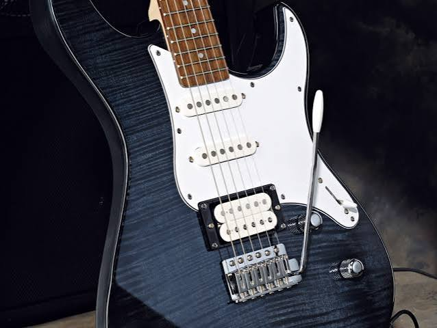

Hobi
Saya adalah orang yang sangat suka terhadap alat musik gitar elektrik karena selain tampilannya keren, gitar ini bisa memainkan banyak genre dengan efek amplifier yang sudah disetel. Saya biasanya berlatih menggunakan video YouTube atau aplikasi untuk belajar dari nol, dan saya juga ingin membuat lagu sendiri menggunakan alat musik yang saya punya meskipun masih bingung harus memulainya dari mana karena masih dalam tahap berkembang.
Lihat Proyek